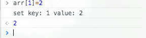
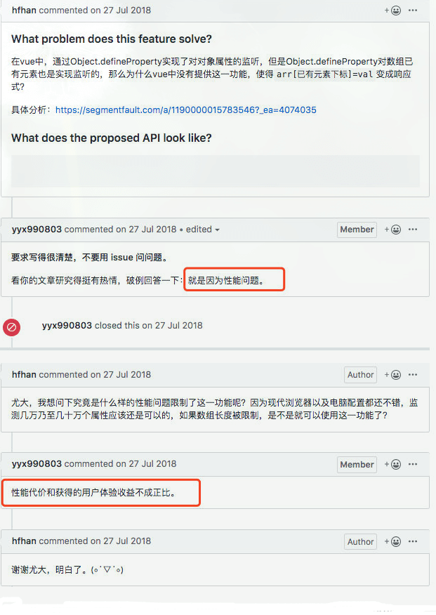

Vue2.0为什么不能检查数组的变化，该怎么解决？
参考答案
前言
我们都知道，Vue2.0对于响应式数据的实现有一些不足：
- 无法检测数组/对象的新增
- 无法检测通过索引改变数组的操作。
分析
- 无法检测数组/对象的新增？
Vue检测数据的变动是通过Object.defineProperty实现的，所以无法监听数组的添加操作是可以理解的，因为是在构造函数中就已经为所有属性做了这个检测绑定操作。
- 无法检测通过索引改变数组的操作。即vm.items[indexOfItem] = newValue？
官方文档中对于这两点都是简要的概括为“由于JavaScript的限制”无法实现，而Object.defineProperty是实现检测数据改变的方案，这个限制是指Object.defineProperty
思考
vm.items[indexOfItem] = newValue真的不能被监听么？
Vue对数组的7个变异方法（push、pop、shift、unshift、splice、sort、reverse）实现了响应式。这里就不做测试了。我们测试一下通过索引改变数组的操作，能不能被监听到。<br><br>遍历数组，用Object.defineProperty对每一项进行监测
function defineReactive(data, key, value) {
Object.defineProperty(data, key, {
enumerable: true,
configurable: true,
get: function defineGet() {
console.log(`get key: ${key} value: ${value}`)
return value
},
set: function defineSet(newVal) {
console.log(`set key: ${key} value: ${newVal}`)
value = newVal
}
})
}
function observe(data) {
Object.keys(data).forEach(function(key) {
defineReactive(data, key, data[key])
})
}
let arr = [1, 2, 3]
observe(arr)
测试说明
通过索引改变arr[1]，我们发现触发了set，也就是Object.defineProperty是可以检测到通过索引改变数组的操作的，那Vue2.0为什么没有实现呢？是尤大能力不行？这肯定毋庸置疑。那他为什么不实现呢？

小结：是出于对性能原因的考虑，没有去实现它。而不是不能实现。
对于对象而言，每一次的数据变更都会对对象的属性进行一次枚举，一般对象本身的属性数量有限，所以对于遍历枚举等方式产生的性能损耗可以忽略不计，但是对于数组而言呢？数组包含的元素量是可能达到成千上万，假设对于每一次数组元素的更新都触发了枚举/遍历，其带来的性能损耗将与获得的用户体验不成正比，故vue无法检测数组的变动。
不过Vue3.0用proxy代替了defineProperty之后就解决了这个问题。
解决方案
数组
- this.$set(array, index, data)
``js<br> //这是个深度的修改，某些情况下可能导致你不希望的结果，因此最好还是慎用<br> this.dataArr = this.originArr<br> this.$set(this.dataArr, 0, {data: '修改第一个元素'})<br> console.log(this.dataArr) <br> console.log(this.originArr) //同样的 源数组也会被修改 在某些情况下会导致你不希望的结果 <br> ``
- splice
``js<br> //因为splice会被监听有响应式，而splice又可以做到增删改。<br> ``
- 利用临时变量进行中转
``js<br> let tempArr = [...this.targetArr]<br> tempArr[0] = {data: 'test'}<br> this.targetArr = tempArr<br> ``
对象
- this.$set(obj, key ,value) - 可实现增、改
- watch时添加
deep：true深度监听，只能监听到属性值的变化，新增、删除属性无法监听
``js<br> this.$watch('blog', this.getCatalog, {<br> deep: true<br> // immediate: true // 是否第一次触发<br> });<br> ``
- watch时直接监听某个key
``js<br> watch: {<br> 'obj.name'(curVal, oldVal) {<br> // TODO<br> }<br> }<br> ``
Vue 2.0 中的响应式系统是基于 Object.defineProperty 实现的，这导致了它无法检测数组和对象的一些特定操作。具体来说：
- 对于数组：Vue 2.0 无法检测数组的新增操作，因为 Object.defineProperty 只适用于对象属性，而不适用于数组索引。
Vue 2.0 也无法检测通过索引改变数组的操作，即 vm.items[indexOfItem] = newValue。这是因为 Object.defineProperty 不会对数组索引的直接赋值操作进行监听。
- 对于对象：
Vue 2.0 无法检测对象属性的新增或删除，因为 Object.defineProperty 只适用于对象属性的直接赋值操作，而不适用于属性的新增或删除。
这些限制是由于 JavaScript 原生 API 的限制，以及 Vue 2.0 为了性能考虑所做的设计决策。尽管 Object.defineProperty 理论上可以检测到通过索引改变数组的操作，但由于性能原因，Vue 2.0 没有实现这一功能。
Vue 3.0 使用了 Proxy 代替了 Object.defineProperty，从而解决了这些限制，提供了更全面的响应式支持。
对于数组和对象的新增和修改，Vue 2.0 提供了一些解决方案，例如使用 this.$set 方法来设置对象或数组的新属性，使用 splice 方法来修改数组等。这些方法可以确保数据的变化能够被 Vue 检测到，并触发相应的更新。